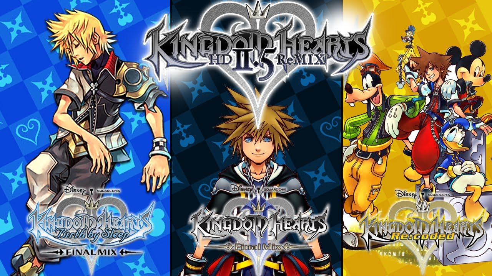

Análisis de Kingdom Hearts HD 1.5 + 2.5 Remix (Xbox One, PC)
Square Enix reúne las ediciones definitivas de sus principales Kingdom Hearts
en una colección imprescindible.
En 2013 y 2014 Square Enix recuperó la mayoría de sus Kingdom Heart con dos
recopilatorios para PlayStation 3: Kingdom Hearts HD 1.5 ReMIX y
Kingdom Hearts HD 2.5 ReMIX. Remasterizaciones entre las que destacaban
los dos juegos principales de la saga más el título de PSP Kingdom Hearts
Birth by Sleep Final Mix, añadía Kingdom Hearts RE: Chain of Memories y una
serie de secuencias de Kingdom Hearts 358/2 Days y Kingdom Hearts: Re:Coded.
¿Se podía mejorar esta oferta? Sí, y eso es lo que nos trae ahora
Kingdom Hearts HD 1.5 + 2.5 Remix para PlayStation 4.
La colección
Kingdom Hearts HD 1.5 + 2.5 Remix se basa en el trabajo previo de las
remasterizaciones de PlayStation 3, que no se limitaron a subir la resolución;
también se actualizaron algunos modelados de personajes principales, texturas
y temas de la banda sonora por otros de mayor calidad. Siendo sinceros, y
como sucedió en aquella revisión, estas diferencias sólo son visibles en
comparaciones directas o primeros planos de secuencias.

Gracias al estilo gráfico de la serie estos juegos resisten bien el
paso del tiempo y rápidamente olvidaremos unos escenarios que a veces
pecan de simpleza. No obstante hay de todo y la calidad es un poco irregular
–como siempre corresponde a este tipo de colecciones con lanzamientos
de diferentes plataformas-, se trata de un cóctel de películas tan
diversas como Peter Pan o Aladdin y otros de estilo más recargado -Port Royal
de Piratas del Caribe y Halloween Town de Pesadilla antes de Navidad-.
Si hablamos de gráficos hay que destacar la novedad más importante de su
salto a PlayStation 4, las 60 imágenes por segundo. Lejos de ser una anécdota
para puristas, es una mejora exigible en una plataforma actual que compensa,
en parte, las limitaciones gráficas de PS2 y PSP. Pero sobre todo beneficia
la jugabilidad de una saga con múltiples enemigos en pantalla, una cámara en
constante movimiento y acción a gran velocidad.
Conclusiones
Con un pack que ofrece aproximadamente 100 horas de juego en total, cuatro
títulos jugables –tres de ellos excelentes- y dos películas para comprender
mejor el trasfondo de los personajes y acontecimientos de la saga, poco se
puede reprochar al contenido de Kingdom Hearts HD 1.5 + 2.5 Remix.